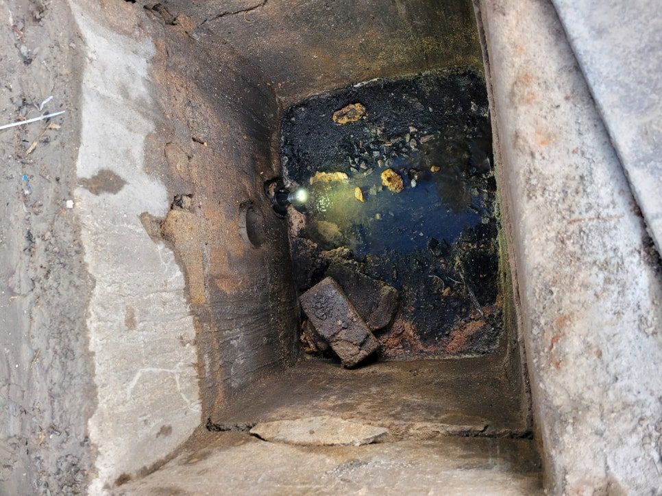
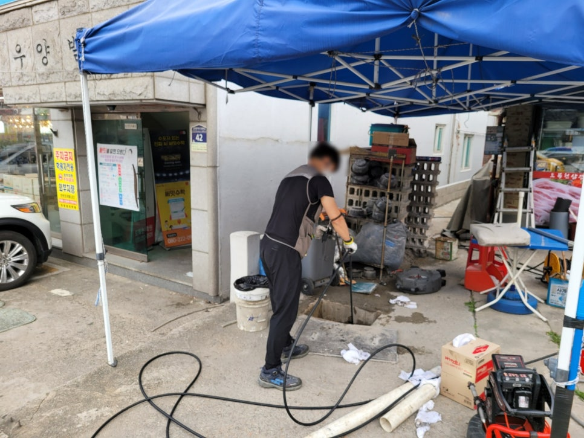
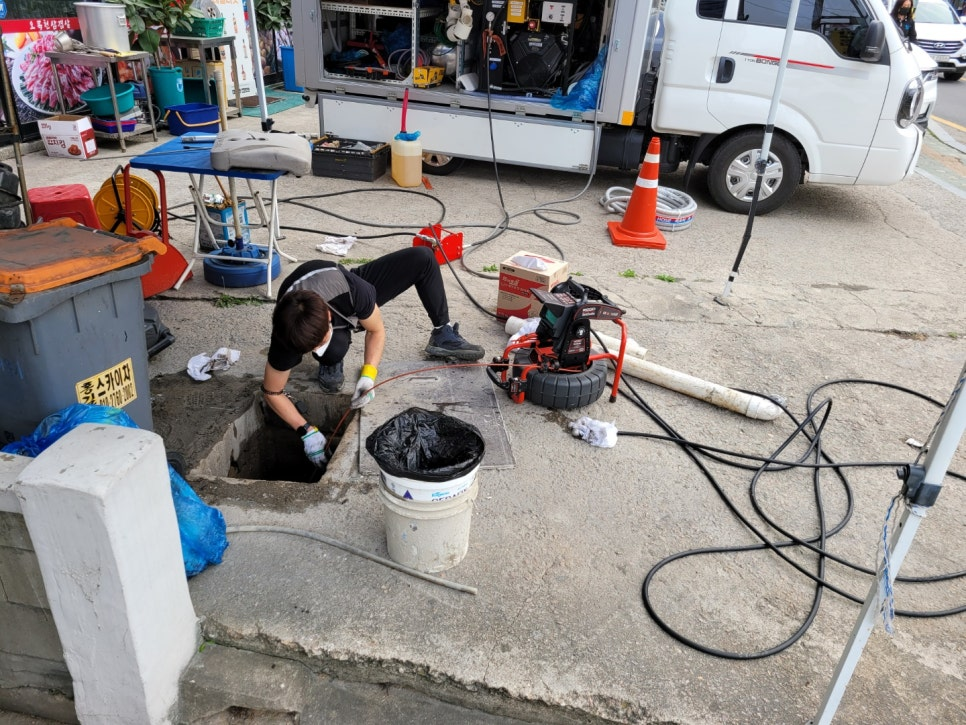
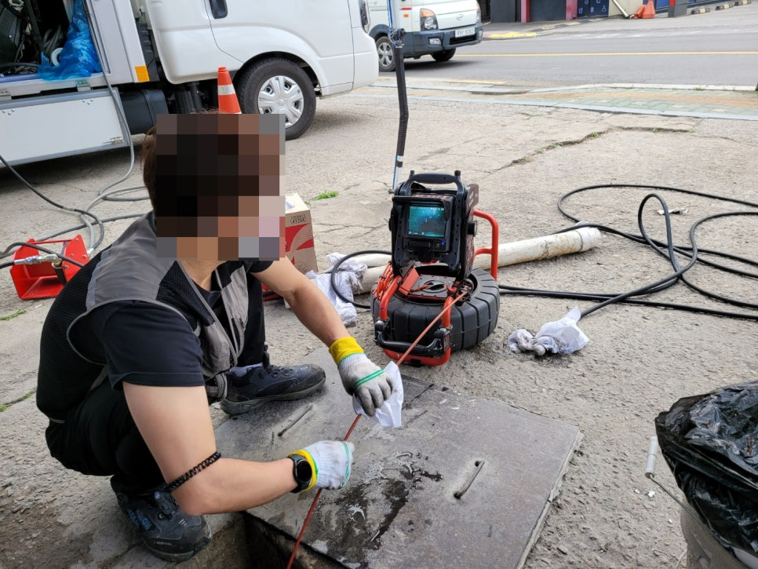
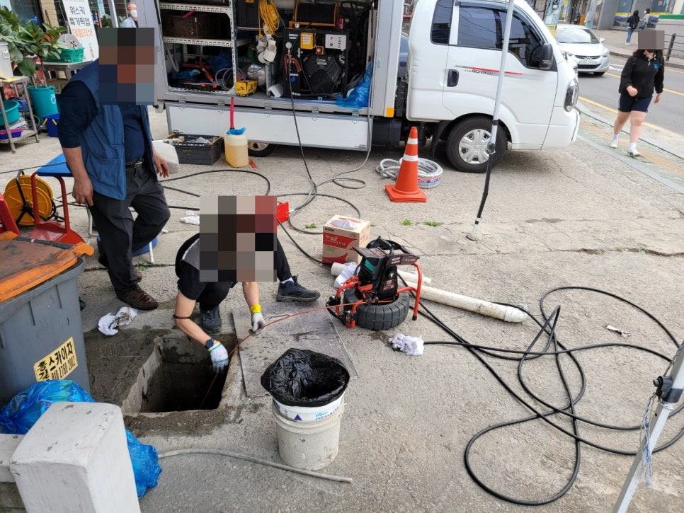
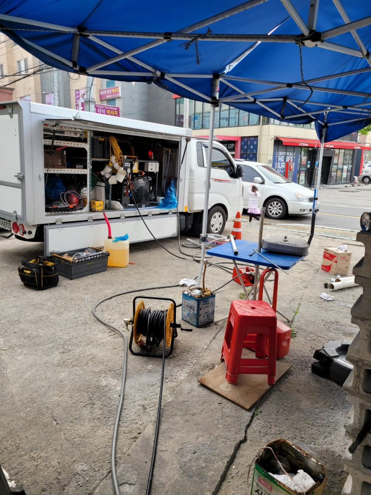
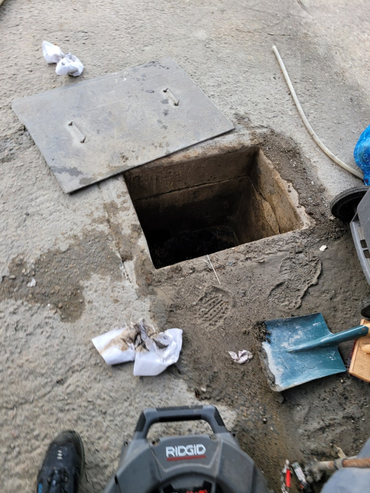

🏠 오산시 하수구 막힘 청소 고압세척으로 해결, 속이 뻥 뚫립니다
오산 하수구막힘 전문 시공 후기

📋 작업 개요
- 위치: 오산
- 서비스 유형: 하수구막힘, 배관막힘, 뚫는업체, 배관청소, 고압세척
- 작업 일시: 2022. 5. 4. 23:02
- 업체명: 하수구수사대 (010-5615-2118)
🔍 문제 상황
오산시 하수구 막힘 청소 고압세척으로 해결
식당을 운영하다 보면
많은 일들이 발생하게 되는데요.
하수구가 막혔다면
식당 운영을 미룰 수도 없고
참 애매합니다.
신속하게 처리해 주는 업체에
연락하여 해결하는 것이
가장 확실한 방법이니
경험이 많고 전문 작업자의
실력이 좋은 업체에서
진행하시기 바랍니다.
오산시 하수구 막힘 청소
고압세척으로 해결을 위해
현장에 출동하였어요.
점심 장사를 진행하는 도중
하수구 막힘을 확인하였고
점심 장사 후 브레이크 타임에
빠르게 해결하길 원하셨어요.
하수구 문제라면 자신 있으므로
당연히 가능한 작업이었습니다.
필요한 장비를
꼼꼼하게 챙겼습니다.
오산 식당 하수구 막힘 현상으로
연락 주시는 곳이 많아요.
음식을 만들고 처리하다 보면
하수구에 문제가 생기기도 하는데요.
대부분 기름이나
이물질이 쌓여 나타나는 현상이라
빠르게 처리해 드리는 것이

🔎 원인 분석
💡 전문가 진단: 하수구수사대최신장비보유!1년as 보장!주말,공휴일도 ok!010-2340-2118
가장 좋습니다.
음식점은
식사 시간을 놓치면 안 되기 때문에
전문 작업자의 손길이 필요하겠죠.
하수구를 확인해 보니
흘러나오는 물이
거의 없었습니다.
정확한 확인을 위해서
준비한 장비를
연결하여 줍니다.
사진에 보이는 장비의
빨간색 선이 직접 확인하기 힘든
하수구 내부의 상태를
촬영해 주는 내시경이에요.
하수구에 물이 꽉 차있거나
여러 원인으로 막혀있다면
뿌옇게 보이는데요.
기름과 이물질이 엉겨 붙어
연결되는 배관이
꽉 막혀있었습니다.
이럴 때 필요한 게
오산 음식점 하수구 고압세척이죠.
신속한 해결을 위해
바쁘게 움직여 봤습니다.
원인을 찾았으니
해결을 해드려야 하는데
하수구와 연결된 배관을 찾은 후
고압세척기로 작업을 하고 있습니다.
음식을 많이 만들고
처리하는 가정, 식당에서는

🔧 작업 과정
주로 기름의 문제가 많아요.
귀찮거나 올바른
처리 방법을 알지 못해
이러한 일들이 발생되곤 합니다.
또한 사용이 많다 보면
신경을 쓰더라도
막히기도 합니다.
사진 속 기계에
연결된 검정 선이
고압세척을 하는 선입니다.
고압세척으로 해결 시
내시경과 세척을
한 번에 할 수 있다는 것이
장점인데요.
작업의 정도를 알 수 있고
남아있는 이물질이 없는지
확인할 수 있어
정말 고마운 기계입니다.
사람의 눈으로
직접 확인하기 힘든 배관을
카메라를 통해서 할 수 있으니
예전보다 편리해졌음을 느끼죠.
배관에 고압세척기를 연결하여
작업을 하니 많은 양의
기름과 이물질이 나오는 것이
보입니다.
고압 세척을 통해
나온 기름들을 처리하고
내시경을 통해 하수구 안을
확인하는데 벽에 붙어있는
이물질이 없도록 꼼꼼하게
작업을 해야
더 오래 사용할 수 있습니다.
당황하셔서 정신없이 장사하신
사장님이 나와보시곤
오늘 내내 물이 안 내려가서
답답했는데
속이 다 뻥 뚫린 듯 시원하다며
호탕하게 웃으셨어요.
고압세척으로 해결하고
마무리하였습니다.
슬기로운 하수구 생활을
다양한 현장에서 작업한 경험이 많으며
오래 일해오며 쌓은 경력이
높은 업체입니다.
전문 작업자가 아니라면
해결하기 힘든 일도
많이 진행한 만큼


✅ 작업 완료
하수구의 문제는 자신 있게
해결해 드릴 수 있습니다.
또한 합리적인 비용으로
부담을 덜어드리고 있으니
하수구 막힘이 나타났다면
연락 주시기 바랍니다.
하수구수사대
최신장비보유!
1년as 보장!
주말,공휴일도 ok!
010-2340-2118
경기도 오산시 오산로160번길 15 201-L16호




⚠️ 하수구 배관 막힘 예방 및 관리 가이드
- ✅ 머리카락, 비닐, 물티슈 등 물에 분해되지 않는 이물질은 하수구 유입을 절대 금지해 주세요.
- ✅ 하수구 거름망을 씌우고 모여진 이물질은 주기적으로 쓰레기통에 바로 비워주셔야 합니다.
- ✅ 배관 노후가 심할 경우 이물질이 더 쉽게 걸리므로 주기적인 배관 세척(고압세척 등)을 권장합니다.
- ✅ 작업 후 1년 이내 재발 시 하수구수사대에서 무상 A/S 보증 서비스를 제공합니다.
💡 핵심 정리
- 확실한 장비 작업(내시경 점검 및 샤프트 스케일링)으로 원인을 뿌리 뽑습니다.
- 작업 후 1년 이내에 동일한 부위 재발 시 100% 무상 A/S 서비스를 보장합니다.
- 서울 · 경기 · 인천 전 지역에 24시간 언제든 긴급 출동할 수 있도록 항시 대기 중입니다.
❓ 자주 묻는 질문 (FAQ)
🚨 오산 하수구막힘 문제로 고민이신가요?
정확한 원인 진단과 확실한 시공으로 재발 없는 해결을 약속드립니다.
24시간 긴급 출동 | 서울 · 경기 · 인천 전지역 | 1년 내 재발 시 무상 A/S